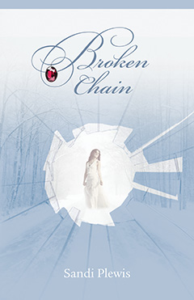
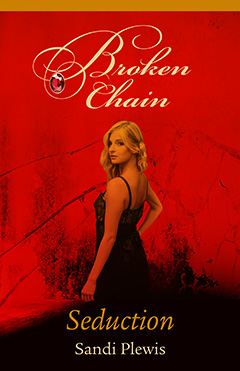
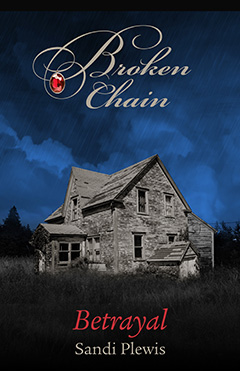
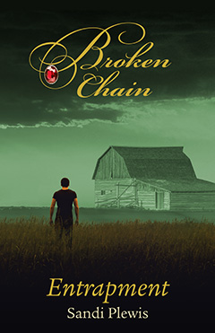
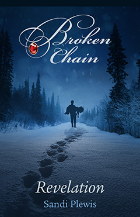

Broken Chain
Available in Kindle format as a complete book or in 4 separate parts:
-

Complete book
-

Part 1:
Seduction -

Part 2:
Betrayal -

Part 3:
Entrapment -

Part 4:
Revelation
Reviews
With colourful and captivating writing, Plewis paints this riveting
story in the mind’s eye as only the best writers can. Highly
entertaining! And very timely as the world reawakens to empaths and
spiritual gifts.
Daryl Hemingway
What a wonderful book. I could not put it down. It brings the reader
into small town Southwestern Ontario, with many twists and turns along
with family secrets. I can’t wait for Sandi’s next book.
Congratulations Sandi on a great Novel!
Judy Brown
You will find it hard to put down…the characters captivate you!
Debra McAuslan
One of the best books I’ve read in a long time. Great job, Sandi
Shawna Elliott
After reading the description, I wasn’t sure what I would think of
this book. Typically not my genre of writing, but Sandi captures the
readers attention and holds tight for the story’s entirety. The
characters are captivating, the stories intertwine beautifully and
then all come crashing together as the book reaches its climax.
Couldn’t get enough of this book, and I’m sorry it’s over.
Patricia R.
Love when a story pulls you right in and this one does that and
more.
Nancy Hislop
A friend gave this book to me, and I’m so glad she did. Sandi Plewis
draws you in to her story, connects you with her characters, and keeps
you interested in what happens next throughout the novel. For me the
story works on a number of levels, and it’s an accurate depiction of
life in a small town in southwestern Ontario. I think most readers can
relate to the community she writes about and the complicated
interpersonal dynamics of her characters. Looking forward to her next
book!
Kathy McLaughlin
Very well written. Found this novel entertaining and suspenseful. A
page turner to the end. I like the way Sandi mentions small towns and
cities (London, Stratford, Kitchener to name a few) in the story
line.
Cathy Barnhardt